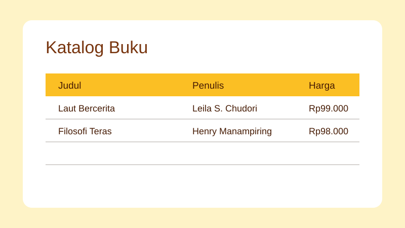

Katalog Toko Buku
Proyek mandiri,

Latar Belakang
Proyek ini dibuat untuk berlatih menyajikan data produk secara terstruktur dan mudah dibaca.
Fitur
- Katalog buku dengan harga
- Tabel ber-caption dan header yang jelas
- Form pemesanan sebagai latihan
Katalog Contoh
| Judul | Penulis | Harga |
|---|---|---|
| Laut Bercerita | Leila S. Chudori | Rp99.000 |
| Filosofi Teras | Henry Manampiring | Rp98.000 |
Yang Saya Pelajari
Data tabel perlu memiliki caption, header kolom, dan scope agar lebih mudah dipahami.